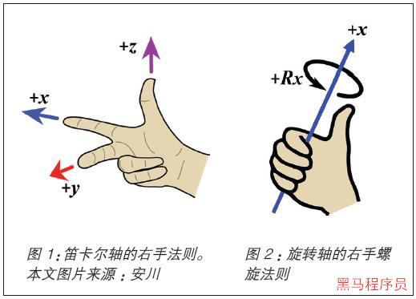
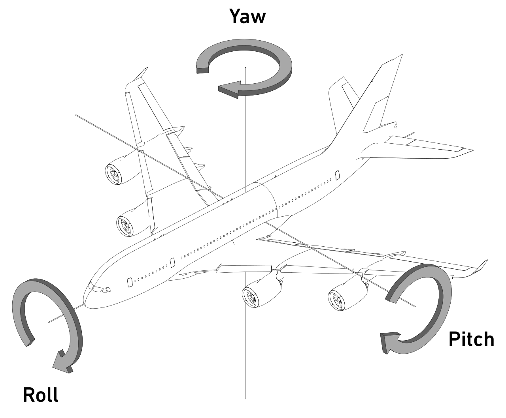
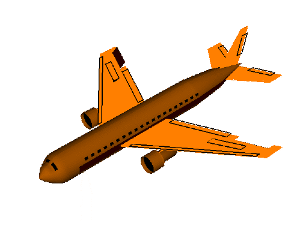
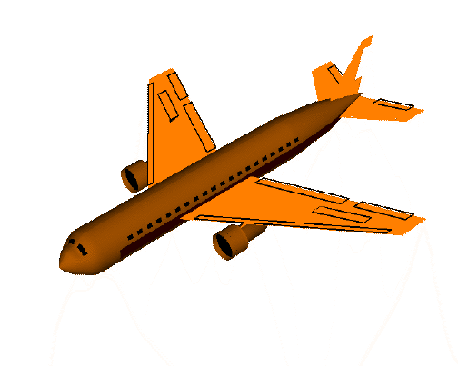
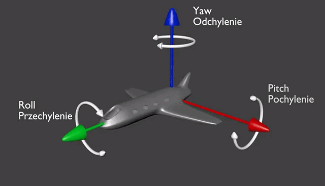

<!DOCTYPE lake>
<h2 data-lake-id="ii7lw" id="ii7lw"><span data-lake-id="u43200972" id="u43200972">学习目标</span></h2><ul list="u891418b6"><li data-lake-id="ub5f9523b" fid="ue61a1698" id="ub5f9523b"><span data-lake-id="u7df9ee3b" id="u7df9ee3b">可以通过MPU6050获取加速度信息</span></li><li data-lake-id="u1c9da4b1" fid="ue61a1698" id="u1c9da4b1"><span data-lake-id="uf74711cc" id="uf74711cc">可以通过DMP库获取角度信息</span></li></ul><h2 data-lake-id="t0e8K" id="t0e8K"><span data-lake-id="u4d714999" id="u4d714999">学习内容</span></h2><h3 data-lake-id="EbO1e" id="EbO1e"><span data-lake-id="u339f80c4" id="u339f80c4">MPU6050</span></h3><p data-lake-id="u18b7b72d" id="u18b7b72d"><span data-lake-id="u3c88d8f4" id="u3c88d8f4">MPU6050是一种常用的集成电路（IC），结合了3轴陀螺仪和3轴加速度计。它用于各种需要运动跟踪和感应的电子项目和设备。MPU6050由英飞凌科技公司（InvenSense）制造，现在已被TDK收购。它的一些主要特点包括：</span></p><ul list="u1452279c"><li data-lake-id="ued86624f" fid="u96fe7388" id="ued86624f"><span data-lake-id="u23badb51" id="u23badb51">3轴陀螺仪：测量角速度，单位为每秒度。</span></li><li data-lake-id="u37606e41" fid="u96fe7388" id="u37606e41"><span data-lake-id="u8245c839" id="u8245c839">3轴加速度计：测量三个方向的加速度。</span></li><li data-lake-id="uf7cf1852" fid="u96fe7388" id="uf7cf1852"><span data-lake-id="ua7440cbb" id="ua7440cbb">数字运动处理器（DMP）：对原始传感器数据执行复杂的计算。</span></li><li data-lake-id="u294eb565" fid="u96fe7388" id="u294eb565"><span data-lake-id="ueb760623" id="ueb760623">I2C通信接口：可以与微控制器和其他数字设备轻松集成。</span></li></ul><p data-lake-id="u03387096" id="u03387096"><span data-lake-id="u678dee36" id="u678dee36">MPU6050在涉及运动跟踪、手势识别和定向检测的项目中很受欢迎。它通常用于无人机、机器人、游戏和虚拟现实系统，以及各种消费电子设备中。开发人员和爱好者经常将MPU6050与Arduino、树莓派和其他嵌入式系统集成，以创建各种运动感应应用程序。</span></p><p data-lake-id="udf4e985a" id="udf4e985a"><span data-lake-id="u532e01b9" id="u532e01b9">​</span><br/></p><p data-lake-id="uf21e998a" id="uf21e998a"><span data-lake-id="u8748ca5e" id="u8748ca5e">在MPU6050中，DMP代表数字运动处理器（Digital Motion Processor）。DMP是一个处理器，内置在MPU6050中，用于处理原始的陀螺仪和加速度计数据。它可以执行复杂的运动处理算法，如姿态估计、运动追踪和运动补偿，以提供更精确的运动数据。</span></p><p data-lake-id="u6bfba4d0" id="u6bfba4d0"><span data-lake-id="u09ec40c4" id="u09ec40c4">通过使用DMP，用户可以从MPU6050获得处理过的数据，而不需要过多的处理器负担。DMP可以执行传感器融合算法，将来自陀螺仪和加速度计的数据融合在一起，以提供更准确、更稳定的姿态和运动跟踪信息。</span></p><p data-lake-id="uf39f9749" id="uf39f9749"><span data-lake-id="u8cfc63a0" id="u8cfc63a0">使用DMP可以简化开发过程，因为它减少了对外部处理器的要求，同时提供了更高级的功能。这使得开发人员能够更容易地实现复杂的运动感应应用，如姿态控制、手势识别和空间定位等。</span></p><h3 data-lake-id="anxKk" id="anxKk"><span data-lake-id="ue7e2f72a" id="ue7e2f72a">欧拉角</span></h3><p data-lake-id="ua7afa901" id="ua7afa901"><span data-lake-id="u08a21f5b" id="u08a21f5b">欧拉角（Euler angles）是一种用于描述物体在三维空间中旋转的方式。它由三个角度组成，分别表示绕三个相互垂直的轴（通常是固定的坐标系的X、Y、Z轴）旋转的量。</span></p><p data-lake-id="u4ca9829e" id="u4ca9829e"><span data-lake-id="u5d36d366" id="u5d36d366">欧拉角通常用于描述物体的旋转姿态，并且相对直观，易于理解。但是，使用欧拉角存在一些问题，特别是在物体进行多次旋转时，可能会产生奇异性和歧义性。这些问题可以导致万向节锁（Gimbal lock）等旋转表示上的限制，特别是当俯仰角接近90度或270度时。</span></p><p data-lake-id="u20a8128c" id="u20a8128c"><span data-lake-id="uc52bd61d" id="uc52bd61d">尽管欧拉角在许多情况下都很有用，并且易于人类理解，但在某些情况下，使用四元数等其他表示方法可能更适合处理旋转问题，特别是在需要连续旋转操作或精确姿态控制的情况下。</span></p><h3 data-lake-id="LZAXg" id="LZAXg"><span data-lake-id="u97bdaef3" id="u97bdaef3" style="color: rgba(0, 0, 0, 0.87)">RPY</span></h3><p data-lake-id="u07efd922" id="u07efd922"><span data-lake-id="u01955a23" id="u01955a23" style="color: rgba(0, 0, 0, 0.87)">RPY是</span><code data-lake-id="uc460f396" id="uc460f396"><span data-lake-id="u545c4ca9" id="u545c4ca9" style="color: rgba(0, 0, 0, 0.87)">Roll翻滚</span></code><span data-lake-id="ua3baa69e" id="ua3baa69e" style="color: rgba(0, 0, 0, 0.87)">（绕X），</span><code data-lake-id="u8d83d32c" id="u8d83d32c"><span data-lake-id="u87b1e9b5" id="u87b1e9b5" style="color: rgba(0, 0, 0, 0.87)">Pitch俯仰（</span></code><span data-lake-id="ub2893374" id="ub2893374" style="color: rgba(0, 0, 0, 0.87)">绕Y），</span><code data-lake-id="udb03dea5" id="udb03dea5"><span data-lake-id="u20917b70" id="u20917b70" style="color: rgba(0, 0, 0, 0.87)">Yaw偏航</span></code><span data-lake-id="u45bbcd64" id="u45bbcd64" style="color: rgba(0, 0, 0, 0.87)">（绕Z）的缩写，即如我们所讲到的旋转示例，</span><strong><span data-lake-id="u75fe8499" id="u75fe8499" style="color: rgba(0, 0, 0, 0.87)">先绕X轴旋转 γ度、接着绕Y轴旋转 β度、最后绕Z轴旋转 α度</span></strong><span data-lake-id="u342bf312" id="u342bf312" style="color: rgba(0, 0, 0, 0.87)">。这里的每一步旋转，都是</span><strong><span data-lake-id="uebd7c878" id="uebd7c878" style="color: rgba(0, 0, 0, 0.87)">绕着固定的坐标系</span></strong><span data-lake-id="ucd7b1cc8" id="ucd7b1cc8" style="color: rgba(0, 0, 0, 0.87)">进行旋转的。由于其旋转轴是绕固定坐标系的，又称之为外旋（</span><strong><span data-lake-id="ua122855f" id="ua122855f" style="color: rgba(0, 0, 0, 0.87)">Extrinsic Rotation</span></strong><span data-lake-id="u256dedd0" id="u256dedd0" style="color: rgba(0, 0, 0, 0.87)">）</span></p><p data-lake-id="u744e40e1" id="u744e40e1"><span data-lake-id="ua13e06b6" id="ua13e06b6">可以通过右手法则判断rpy：</span></p><p data-lake-id="u0d56e376" id="u0d56e376"></p><p data-lake-id="u9d1ae562" id="u9d1ae562"><br/></p><p data-lake-id="u4218af55" id="u4218af55"></p><p data-lake-id="u6432179e" id="u6432179e"><span data-lake-id="ud447e112" id="ud447e112">​</span><br/></p><ul list="uc11f5d90"><li data-lake-id="u3aadbc1e" fid="u9b055a5a" id="u3aadbc1e"><span data-lake-id="u3032b981" id="u3032b981">滚动（Roll）：绕X轴旋转，将物体沿着X轴的正方向旋转。这种旋转会导致物体绕着自身的横轴旋转。</span></li></ul><p data-lake-id="uaad7e3d8" id="uaad7e3d8" style="padding-left: 2em"></p><ul list="uc11f5d90" start="2"><li data-lake-id="u75238763" fid="u9b055a5a" id="u75238763"><span data-lake-id="uf03b37ff" id="uf03b37ff">俯仰（Pitch）：绕Y轴旋转，将物体沿着Y轴的正方向旋转。这种旋转会导致物体绕着自身的纵轴旋转。</span></li></ul><p data-lake-id="u74f956f8" id="u74f956f8" style="padding-left: 2em"></p><ul list="uc11f5d90" start="3"><li data-lake-id="ub246de6f" fid="u9b055a5a" id="ub246de6f"><span data-lake-id="u12863af0" id="u12863af0">偏航（Yaw）：绕Z轴旋转，将物体沿着Z轴的正方向旋转。这种旋转会导致物体绕着自身的垂直轴旋转。</span></li></ul><p data-lake-id="u0ab94e77" id="u0ab94e77" style="padding-left: 2em"></p><p data-lake-id="u818cff44" id="u818cff44" style="padding-left: 2em"><br/></p><p data-lake-id="ucd1c339b" id="ucd1c339b"></p><p data-lake-id="ub2c5201f" id="ub2c5201f"><br/></p><h3 data-lake-id="nJ5IQ" id="nJ5IQ"><span data-lake-id="u414a1e0e" id="u414a1e0e">移植与使用</span></h3><p data-lake-id="u1af6a13a" id="u1af6a13a"><a class="yuque-card-link" href="https://lceda001.feishu.cn/wiki/JNvYwEU5SiGldFkNcxncYXhZnZc" rel="noopener noreferrer" target="_blank">bookmarkInline：bookmarkInline</a></p><p data-lake-id="u6f2a67cd" id="u6f2a67cd"><br/></p><p data-lake-id="ud1d5aa3b" id="ud1d5aa3b"><a class="yuque-card-link" href="../../_assets/f11d8f0040a13c75f2d26c7f.txt">bsp_mpu6050.c</a><a class="yuque-card-link" href="../../_assets/642a771a40a0de4bc6b93e4e.txt">bsp_mpu6050.h</a><a class="yuque-card-link" href="../../_assets/a15f73228169a11d9eb8ca02.txt">dmpKey.h</a><a class="yuque-card-link" href="../../_assets/0ac6459f49ebd43eea7e1679.txt">dmpmap.h</a><a class="yuque-card-link" href="../../_assets/baeb49a03c321cf9d4fa7802.txt">inv_mpu.c</a><a class="yuque-card-link" href="../../_assets/21e6d8235733dff24e4199fe.txt">inv_mpu.h</a><a class="yuque-card-link" href="../../_assets/ea4c332b38b85ad1a9416f0f.txt">inv_mpu_dmp_motion_driver.c</a><a class="yuque-card-link" href="../../_assets/672c6b5476148859653c8a9e.txt">inv_mpu_dmp_motion_driver.h</a></p><ul list="ued9c82e1"><li data-lake-id="u0cbcba05" fid="uff8e4857" id="u0cbcba05"><span data-lake-id="ubd640b7e" id="ubd640b7e">bsp_mpu6050 为mpu6050驱动</span></li><li data-lake-id="ub891481d" fid="uff8e4857" id="ub891481d"><span data-lake-id="uea40ce02" id="uea40ce02">inv_mpu inv_mpu_dmp_motion_driver为dmp处理器，可以计算出当前的欧拉角。</span></li></ul><p data-lake-id="u6d71e127" id="u6d71e127"><span data-lake-id="u1b2cf6f8" id="u1b2cf6f8">测试代码：</span></p><span class="yuque-card-unsupported">[codeblock]</span><h2 data-lake-id="ArIxY" id="ArIxY"><span data-lake-id="ucf901657" id="ucf901657">练习</span></h2><ul list="u5364ca2c"><li data-lake-id="u792469ac" fid="u6486f0e7" id="u792469ac"><span data-lake-id="uf5534111" id="uf5534111">实现mpu6050数据读取</span></li></ul><p data-lake-id="u2d2d507c" id="u2d2d507c"><span data-lake-id="u23dd05ec" id="u23dd05ec">​</span><br/></p>